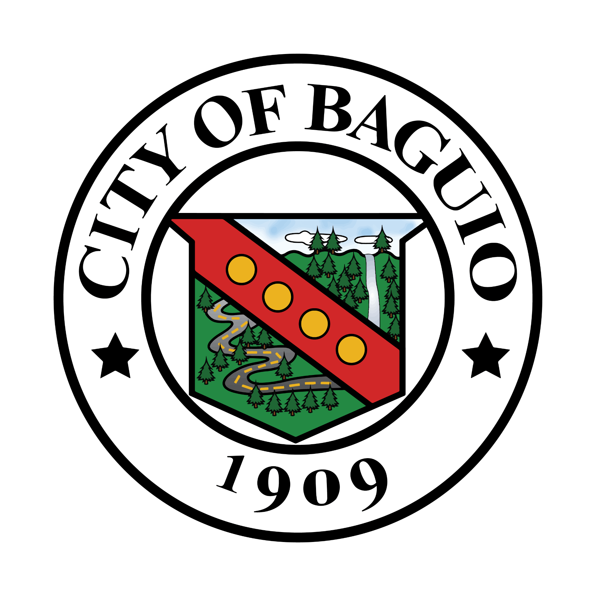
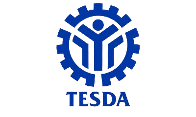
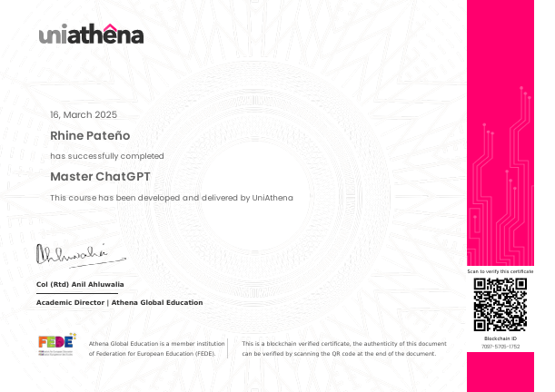
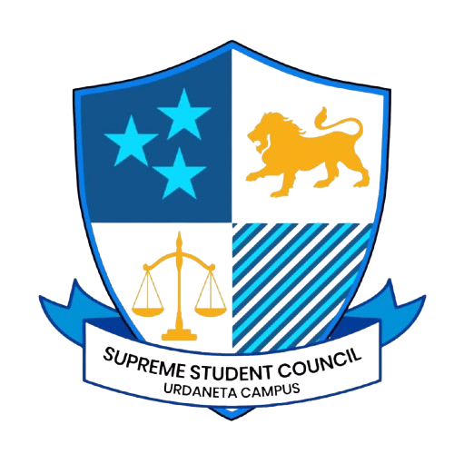
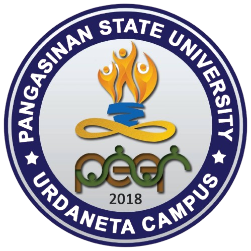
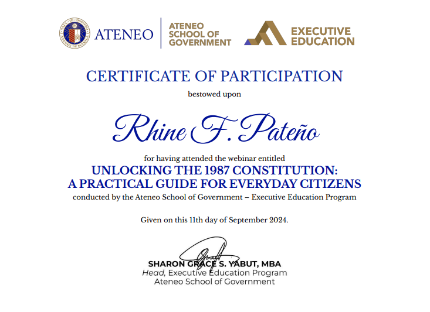

My Certificates
🏆 National Certificates
-

Geographic Information Analyst Intern – MITD, Baguio City Hall
Assisted in spatial data analysis, mapping, and GIS-based decision support for local government projects.
-
.PNG) Certified Safety Officer II – BOSH Training
Certified Safety Officer II – BOSH TrainingCompleted foundational training on occupational safety standards, risk management, and hazard identification in the workplace.
-

Computer Systems Servicing NCII – TESDA
Certified competency in computer hardware servicing, troubleshooting, and network setup following TESDA standards.
🌐 International Certificates
-

Master ChatGPT – Athena Global Education
Mastered AI-powered conversational tools for enhanced productivity, automation, and communication efficiency.
-
Describe Cloud Concepts – Microsoft Azure Fundamentals
Acquired knowledge on core cloud services, architecture, and cloud computing principles with Microsoft Azure.
-
Describe Azure Management and Governance – Microsoft Azure Fundamentals
Explored Azure governance tools, management solutions, and compliance frameworks within enterprise environments.
-
Explore Data Analytics in Azure – Microsoft Azure Data Fundamentals
Studied the fundamentals of data analytics, data visualization, and data processing using Azure Data Services.
-
Explore Non-Relational Data in Azure – Microsoft Azure Data Fundamentals
Learned how Azure supports non-relational data models, NoSQL databases, and scalable cloud storage solutions.
-
Explore Relational Data in Azure – Microsoft Azure Data Fundamentals
Gained insight into Azure relational database services, SQL-based solutions, and data integrity best practices.
-
AI for Beginners – HP Life Course Online
Developed foundational understanding of artificial intelligence, its applications, and societal impact.
-
Circular Economy – HP Life Course Online
Learned sustainable business practices focusing on resource efficiency, waste reduction, and economic impact.
-
Effective Leadership – HP Life Course Online
Enhanced leadership skills in team management, strategic decision-making, and organizational influence.
-
NDG Linux Essentials – Cisco Networking Academy
Learned fundamental Linux OS operations, command-line usage, and open-source systems management.
-
NDG Linux Unhatched – Cisco Networking Academy
Explored the basics of Linux systems, introductory shell commands, and open-source software concepts.
-
Online Self-Paced Learning – ISC2 CC
Completed cybersecurity foundational learning modules aligned with ISC2 Certified in Cybersecurity curriculum.
🎓 Leadership Certificates
-
.png) Public Relations Officer – Federated Graduating Officers, Pangasinan State University Urdaneta City Campus
Public Relations Officer – Federated Graduating Officers, Pangasinan State University Urdaneta City CampusServed as the key liaison for external communications, event promotions, and university-wide representation for the federated body of graduating students.
-
Public Relations Officer – Computer Engineering Graduating Officers, Pangasinan State University Urdaneta City Campus
Managed publicity, social media presence, and stakeholder engagement for the graduating Computer Engineering cohort.
-

Computer Engineering Representative – Supreme Student Council, Pangasinan State University Urdaneta City Campus
Represented the Computer Engineering student body in the highest student governing council, voicing concerns and promoting academic and welfare initiatives.
-
.png) Assistant Secretary – Institute of Computer Engineers of the Philippines Student Edition, Pangasinan State University Urdaneta City Campus
Assistant Secretary – Institute of Computer Engineers of the Philippines Student Edition, Pangasinan State University Urdaneta City CampusProvided organizational support, documentation, and record-keeping for the student chapter of the national engineering organization.
-

3rd Year Representative – Peer Facilitator Circle, Pangasinan State University Urdaneta City Campus
Advocated student concerns and facilitated peer mentoring activities, fostering leadership and emotional support within the university community.
-

Unlocking the 1987 Constitution A Practical Guide for Everyday Citizens – Ateneo School of Government
Participated in leadership development programs focused on communication, conflict resolution, and effective governance.